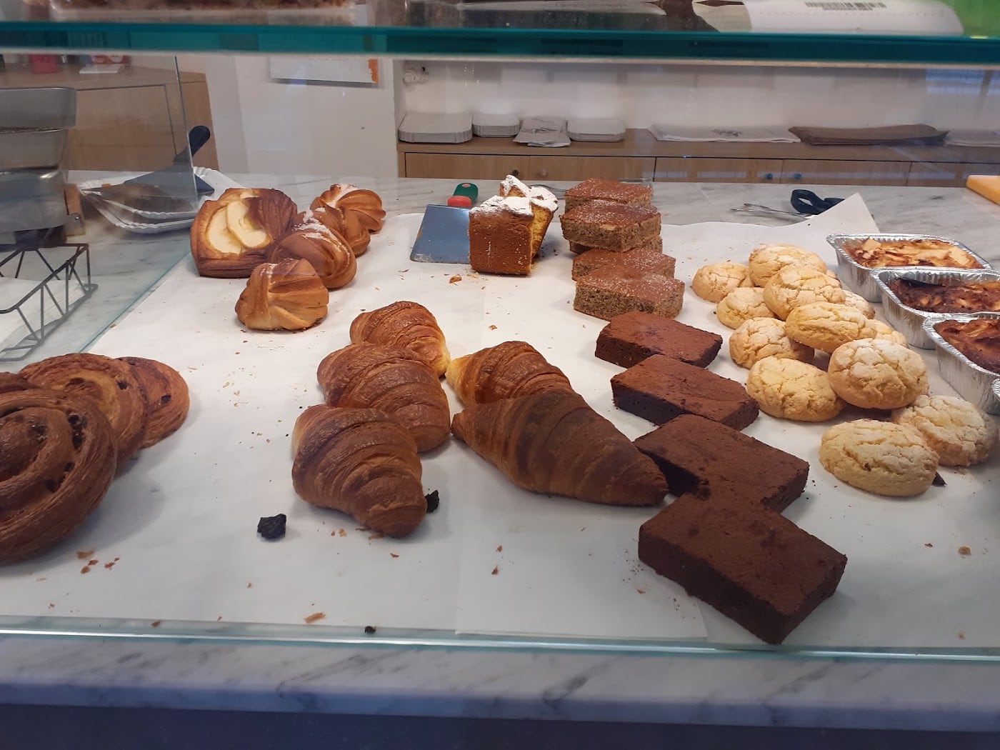

Pane a lievitazione naturale
Pagnotte di pasta madre e pani speciali: olive, cioccolato, uvetta. Crosta croccante, mollica viva.
✹Gambero Rosso · Tre Pani 2027
Il tempo del lievito.
Un forno di quartiere a Lambrate dove il pane nasce dalla pasta madre e dall'attesa. Pane a lievitazione naturale, pizza, focacce e dolci — fra i migliori panifici d'Italia.

Sfornato oggi01Il forno
Il Forno di Lambrate è un forno di quartiere all'angolo di Via Teodosio: pane a lievitazione naturale con pasta madre, pizza e gastronomia, con un'idea fissa in testa — innovazione e ricerca, senza scorciatoie. Ogni giorno il panettiere Cesare e il suo banco sfornano prodotti che hanno il tempo dentro.
Un lavoro che si vede: nel 2027 la guida «Pane e Panettieri d'Italia» del Gambero Rosso ci ha assegnato i Tre Pani — il riconoscimento più alto, riservato a una manciata di forni in tutto il Paese. Ma il premio più bello resta chi torna ogni mattina.
 Tre Pani
Tre Pani02Cosa sforniamo
Pagnotte di pasta madre e pani speciali: olive, cioccolato, uvetta. Crosta croccante, mollica viva.
Pizza bianca, rossa, zucchine, porchetta e focacce fragranti — perfette per il pranzo al volo.
Sfoglia e brioche del mattino, cornetti vuoti o farciti: la colazione del quartiere.
Torte, biscotti, dolci da forno e lievitati delle feste, con la stessa cura del pane.
Salati, rustici e specialità da banco per portare a casa qualcosa di buono, subito.
Fatti dire cosa c'è di fresco oggi.
Chiama o scriviciIl banco cambia ogni giorno: prezzi al pezzo e al chilo in negozio. Fascia 1–10 € a persona.
03Galleria
04Dove & orari
| Lunedì | 07:30 – 19:30 |
|---|---|
| Martedì | 07:30 – 19:30 |
| Mercoledì | 07:30 – 19:30 |
| Giovedì | 07:30 – 19:30 |
| Venerdì | 07:30 – 19:30 |
| Sabato | 07:30 – 17:30 |
| Domenica | Chiuso |
Via Teodosio 2, 20131 Milano · 342 340 9218
La mappa è di Google: aprendola, Google riceve il tuo indirizzo IP e può usare i suoi cookie.
05Recensioni
“Forno di quartiere. Pane a lievitazione naturale, pizza e gastronomia. Innovazione e ricerca gastronomica.”
Paolo · Local Guide
“Prodotti di alta qualità a un prezzo più che onesto, e personale al banco sempre cordiale e solare. Non mi ha mai deluso.”
Stefano · Google
“Sicuramente uno dei migliori forni a Milano. Non abito vicino, ma quando passo in zona la fermata è d'obbligo per fare rifornimento.”
Luca · Local Guide
“Ottima qualità dei cibi: pane, pizze, focacce buonissime e molto particolari.”
Google
“Ottimi i pani con olive, cioccolato e uvetta: ricchi e pieni di sapore.”
Google
06Passa a trovarci
Passa in Via Teodosio 2, chiamaci per mettere da parte quello che ti serve o scrivici su Instagram. Per pizze, focacce e dolci delle feste, prenota in anticipo.
Pane a lievitazione naturale con pasta madre, cotto ogni giorno: dalle pagnotte classiche ai pani speciali con olive, cioccolato o uvetta. Oltre al pane, pizza al taglio, focacce, brioche, croissant, dolci e gastronomia.
In Via Teodosio 2, all'angolo, a Lambrate (Milano). Aperti da lunedì a venerdì 07:30–19:30, sabato 07:30–17:30. Domenica chiuso.
È il riconoscimento più alto della guida «Pane e Panettieri d'Italia» del Gambero Rosso, assegnato ogni anno solo ai migliori panifici del Paese. Il Forno di Lambrate ha ricevuto i Tre Pani nel 2027.
Puoi passare in negozio, ordinare al telefono allo 342 340 9218 o scriverci su Instagram. Per pizze, focacce e dolci delle feste conviene prenotare in anticipo.